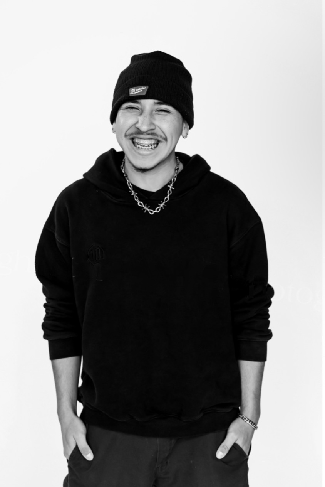

Israel Navon
Covarrubias
Israel Navon Covarrubias is a Dallas-based artist and sculptor who works across different mediums, primarily sculpture. His relationship with art began around the age of three, when he started drawing characters from memory. With crayons, markers, and pencils, he studied what he saw on television, teaching himself to observe shapes, proportions, and details.
As he grew older, Covarrubias sought to expand beyond drawing and explore the possibilities of different materials and processes. His studies at Booker T. Washington High School for the Performing and Visual Arts helped him develop a more versatile practice, which he continues to build at Southern Methodist University's Meadows School of the Arts.
Today, his work moves between personal exploration and commissioned projects. Each offers different challenges, allowing him to develop his technical abilities while learning how to translate ideas into physical form. Alongside his professional work, he hopes to build an expansive body of art that includes connected series, independent works, and pieces that continue to find new audiences long after their creation.
Guided by hard work, commitment, and an evolving Christian faith, Covarrubias approaches his practice as part of a larger process of growth. He continues to discover what he wants to communicate through his work, what he is capable of making, and what kind of artist he hopes to become.